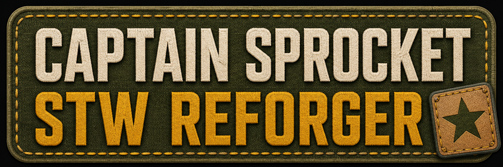

Additional STW Workshop Pages
These current Workshop pages complete the directory entries whose IDs were not included in the original Quick Reference list:
STW Mod Directory
Find each STW mod’s Workshop page and online manual here. STW Divide&Conquer Enhanced is documented in this guide because it is an add-on to the original STW Divide And Conquer.
| STW mod | Workshop | Manual |
|---|---|---|
| STW Divide And Conquer | Workshop | Manual |
| STW Divide&Conquer Enhanced | Workshop | This guide |
| STW Anti-Air Team | Workshop | Manual |
| STW Air Drops | Workshop | Manual |
| STW Armored Spawner | Workshop | Manual |
| STW Bases Generator | Workshop | Manual |
| STW Boats Spawner | Workshop | Manual |
| STW Choppers | Workshop ID not listed | Manual |
| STW Civilians Spawner | Workshop | Manual |
| STW Clothes | Workshop ID not listed | Manual |
| STW Close Quarters Battle | Workshop | Manual |
| STW Combat Helipads | Workshop ID not listed | Manual |
| STW Combat Helipads Light | Workshop | Manual |
| STW Combat Knowledge | Workshop | Manual |
| STW Combat Support API | Workshop | Manual |
| STW Crates | Workshop | Manual |
| STW Experience | Workshop | Manual |
| STW Garbage System | Workshop | Manual |
| STW Heavy Weapons | Workshop | Manual |
| STW Light Vehicle Spawner | Workshop | Manual |
| STW Mine Fields | Workshop | Manual |
| STW Parachute Spawn Point | Workshop | Manual |
| STW Snipers & Spotters | Workshop | Manual |
| STW Stronghold | Workshop | Manual |
| STW Tanks Spawner | Workshop | Manual |
| STW Task Commander | Workshop | Manual |
| STW Transport Helipads | Workshop | Manual |
| STW Weapons | Workshop ID not listed | Manual |
| STW Zombies Spawner | Workshop | Manual |
The STW Mods Complete Experience
STW Divide And Conquer is the foundation: it provides the strategic campaign and the front line that the other systems can build upon. STW Divide&Conquer Enhanced makes that experience better by adding optional strategic reinforcements and integrations with compatible STW addons. STW Combat Knowledge makes the experience complete by giving the battlefield a deeper sense of awareness, reaction and combat support.
Dependency diagram
1. STW Divide And Conquer
Required foundation for the strategic campaign.
2. STW Divide&Conquer Enhanced
ADD ON that enhances the original campaign. It requires the foundation above; it is not a substitute for it.
3. STW Combat Knowledge
Recommended companion that completes the tactical experience.
↓ Complete STW campaign experience ↓
Optional compatible addons, such as STW Snipers & Spotters and STW Anti-Air Team, can provide additional battlefield activity when installed.
Recommended server setup
- Install and enable STW Divide And Conquer.
- Install and enable STW Divide&Conquer Enhanced.
- Install and enable STW Combat Knowledge.
- Add compatible optional addons when desired.
In one sentence
Divide And Conquer is the foundation, Divide&Conquer Enhanced improves it, and Combat Knowledge completes the experience.
What to expect the first time
Let the server finish. Once the strategical database files exist, the system can restart quite quickly on later launches. The first run is the heavy one because STW is preparing the information it needs instead of repeatedly rebuilding it every time the server starts.
While those files are not present, the system may respond very slowly. That can look like a problem during the first run, but it is usually the expected cost of preparing the scenario. Avoid repeatedly restarting the server during generation, because each interrupted run can delay the point at which the files are ready.
Configuration for administrators
The mods arrive preconfigured with settings intended to be friendly to low-end systems and with no RHS presence assumed. This gives a sensible starting point for a broad range of servers; it does not mean every map, mod collection or player count will need identical settings.
Make configuration changes in the corresponding files under $profile/STW. Each system has its own folder and configuration file. Stop the server before editing, make one deliberate change at a time, and restart it so the new values are loaded cleanly.
Good starting point
- Use the shipped defaults first.
- Confirm the scenario works without RHS before adding more faction or asset dependencies.
- Give first-run database generation enough uninterrupted time.
When tuning
- Increase activity gradually on low-end hardware.
- Use the specific system manual to identify its configuration file.
- Keep a copy of working files before making larger changes.
$profile/STW, not in the addon files. Profile settings are the administrator’s safe place to tune the installed systems for a particular server and scenario.Performance tuning
For a smoother server, activate -aiPartialSim on the server. This lets the server use partial AI simulation and is especially useful when a scenario has many active AI groups. Apply the launch option to the authoritative server rather than relying on individual clients.
It is also advised to use a cleanup system such as STW Garbage System. Removing eligible wrecks, bodies, inventory items and other accumulated clutter helps keep long-running 24/7 sessions healthy. Tune cleanup carefully for your scenario so deliberately placed or distant encounters are not removed unexpectedly.
Make these choices alongside the STW settings under $profile/STW, then test them on the actual map and mod list used by the server. Large maps, high player counts and heavily populated scenarios may need more conservative spawn and cleanup settings even when the shipped defaults run well on a smaller test.
Useful Mod Links and JSONs
STW Mods JSONs
Copy the complete list below into the appropriate mod list or configuration file.
Show STW Mods JSONs
[
{
"modId": "6A3950D64F1072DA",
"name": "STW Air Drops",
"required": false
},
{
"modId": "69EAA987F3AD55D1",
"name": "STW Heavy Weapons",
"required": false
},
{
"modId": "69F145357FF8207B",
"name": "STW Armored Spawner",
"required": false
},
{
"modId": "69E531416F617BDB",
"name": "STW Crates",
"required": false
},
{
"modId": "69DCCEB968B92571",
"name": "STWBasesGenerator",
"required": false
},
{
"modId": "6A0A3E8B6A9C0719",
"name": "STW Experience",
"required": false
},
{
"modId": "69E72E8A33B7C43A",
"name": "STW Bases-Crates Integration",
"required": false
},
{
"modId": "69E12A944C6AE5AA",
"name": "STW Garbage System",
"required": false
},
{
"modId": "69DF24C9E5BEE30C",
"name": "STW Tanks Spawner",
"required": false
},
{
"modId": "69E8B2129CC185F7",
"name": "STW Parachute SpawnPoint",
"required": false
},
{
"modId": "6A492D2543718567",
"name": "STW Combat Knowledge",
"required": false
},
{
"modId": "6A268552E2B571AF",
"name": "STW Light Vehicle Spawner",
"required": false
},
{
"modId": "6A1D7AF1060F02F4",
"name": "STW Transport Helipads",
"required": false
},
{
"modId": "69FE5939649668A2",
"name": "STW Mine Fields",
"required": false
},
{
"modId": "6A0C1B4265742EBC",
"name": "STW Snipers & Spotters",
"required": false
},
{
"modId": "6A2C8C45F744CB17",
"name": "STW Combat Helipads Light",
"required": false
},
{
"modId": "6A4685D07BA826A5",
"name": "STWCombatSupportAPI",
"required": false
},
{
"modId": "6A58D4467C928606",
"name": "STW Road Network",
"required": false
},
{
"modId": "69FB76C0D035957E",
"name": "STW Stronghold",
"required": false
},
{
"modId": "A9D7F20C4E8B61F3",
"name": "STW Close Quarters Battle",
"required": false
},
{
"modId": "6A66A8B970871EE2",
"name": "STW Building Knowledge",
"required": false
},
{
"modId": "6A6B2BE0558DA3DF",
"name": "STW Zombies Spawner",
"required": false
},
{
"modId": "6A608395674B259E",
"name": "STW Zone Exclusion",
"required": false
},
{
"modId": "69E0A48B209F861A",
"name": "STW Civilians Spawner",
"required": false
},
{
"modId": "69DEAA8B1AA2931E",
"name": "STW Boats Spawner",
"required": false
},
{
"modId": "6A2EC47163C7DE19",
"name": "STW Task Commander",
"required": false
}
]Parachutes for STW Parachute Spawn Point
Show parachute JSONs
[
{
"modId": "65930CB4CD0237B2",
"name": "Parachute Framework",
"required": false
},
{
"modId": "6867754CA817D856",
"name": "MFF Parachute",
"required": false
},
{
"modId": "69735D889EA31A8B",
"name": "Parachute SOA V2",
"required": false
},
{
"modId": "68996556700D5CA1",
"name": "Prontos Parachutes",
"required": false
}
]IFVs and Tanks
Show IFVs and Tanks JSONs
[
{
"modId": "5D1880C4AD410C14",
"name": "M1 Abrams",
"required": false
},
{
"modId": "5E524E4FEECCA92B",
"name": "BMP-1 IFV",
"required": false
},
{
"modId": "5B383D4CB27E0D54",
"name": "BMP-3 IFV",
"required": false
},
{
"modId": "65171C2883CB81B4",
"name": "BTR 152",
"required": false
},
{
"modId": "5E5C154FEE1094BB",
"name": "M113 APC",
"required": false
},
{
"modId": "63120AE07E6C0966",
"name": "M2 Bradley Fighting Vehicle",
"required": false
},
{
"modId": "685952488F7E3CBA",
"name": "CIE Leopard 2A6",
"required": false
}
]Helicopters
Show Helicopters JSONs
[
{
"modId": "628933A0D3A0D700",
"name": "WCS_Mi-24V",
"required": false
},
{
"modId": "609E138FE9005877",
"name": "Mi-28",
"required": false
},
{
"modId": "64CB35D07BAEE60F",
"name": "WCS_KA-52",
"required": false
},
{
"modId": "64CB39E57377C861",
"name": "WCS_AH-1S",
"required": false
},
{
"modId": "6303360DA719E832",
"name": "WCS_AH-64D",
"required": false
},
{
"modId": "6273146ADFE8241D",
"name": "WCS_AH-6M",
"required": false
},
{
"modId": "6704485615D2D3C3",
"name": "H-47 Chinook - Fastroping",
"required": false
}
]Mod Lists
STW Mods JSONs
# STW Air Drops
https://reforger.armaplatform.com/workshop/6A3950D64F1072DA
# STW Heavy Weapons
https://reforger.armaplatform.com/workshop/69EAA987F3AD55D1
# STW Armored Spawner
https://reforger.armaplatform.com/workshop/69F145357FF8207B
# STW Crates
https://reforger.armaplatform.com/workshop/69E531416F617BDB
# STWBasesGenerator
https://reforger.armaplatform.com/workshop/69DCCEB968B92571
# STW Experience
https://reforger.armaplatform.com/workshop/6A0A3E8B6A9C0719
# STW Bases-Crates Integration
https://reforger.armaplatform.com/workshop/69E72E8A33B7C43A
# STW Garbage System
https://reforger.armaplatform.com/workshop/69E12A944C6AE5AA
# STW Tanks Spawner
https://reforger.armaplatform.com/workshop/69DF24C9E5BEE30C
# STW Parachute SpawnPoint
https://reforger.armaplatform.com/workshop/69E8B2129CC185F7
# STW Combat Knowledge
https://reforger.armaplatform.com/workshop/6A492D2543718567
# STW Light Vehicle Spawner
https://reforger.armaplatform.com/workshop/6A268552E2B571AF
# STW Transport Helipads
https://reforger.armaplatform.com/workshop/6A1D7AF1060F02F4
# STW Mine Fields
https://reforger.armaplatform.com/workshop/69FE5939649668A2
# STW Snipers & Spotters
https://reforger.armaplatform.com/workshop/6A0C1B4265742EBC
# STW Combat Helipads Light
https://reforger.armaplatform.com/workshop/6A2C8C45F744CB17
# STWCombatSupportAPI
https://reforger.armaplatform.com/workshop/6A4685D07BA826A5
# STW Road Network
https://reforger.armaplatform.com/workshop/6A58D4467C928606
# STW Stronghold
https://reforger.armaplatform.com/workshop/69FB76C0D035957E
# STW Close Quarters Battle
https://reforger.armaplatform.com/workshop/A9D7F20C4E8B61F3
# STW Building Knowledge
https://reforger.armaplatform.com/workshop/6A66A8B970871EE2
# STW Zombies Spawner
https://reforger.armaplatform.com/workshop/6A6B2BE0558DA3DF
# STW Zone Exclusion
https://reforger.armaplatform.com/workshop/6A608395674B259E
# STW Civilians Spawner
https://reforger.armaplatform.com/workshop/69E0A48B209F861A
# STW Boats Spawner
https://reforger.armaplatform.com/workshop/69DEAA8B1AA2931E
# STW Task Commander
https://reforger.armaplatform.com/workshop/6A2EC47163C7DE19
Parachutes for STW Parachute Spawn Point
# Parachute Framework
https://reforger.armaplatform.com/workshop/65930CB4CD0237B2
# MFF Parachute
https://reforger.armaplatform.com/workshop/6867754CA817D856
# Parachute SOA V2
https://reforger.armaplatform.com/workshop/69735D889EA31A8B
# Prontos Parachutes
https://reforger.armaplatform.com/workshop/68996556700D5CA1
IFVs and Tanks
# M1 Abrams
https://reforger.armaplatform.com/workshop/5D1880C4AD410C14
# BMP-1 IFV
https://reforger.armaplatform.com/workshop/5E524E4FEECCA92B
# BMP-3 IFV
https://reforger.armaplatform.com/workshop/5B383D4CB27E0D54
# BTR 152
https://reforger.armaplatform.com/workshop/65171C2883CB81B4
# M113 APC
https://reforger.armaplatform.com/workshop/5E5C154FEE1094BB
# M2 Bradley Fighting Vehicle
https://reforger.armaplatform.com/workshop/63120AE07E6C0966
# CIE Leopard 2A6
https://reforger.armaplatform.com/workshop/685952488F7E3CBA
Helicopters
# WCS_Mi-24V
https://reforger.armaplatform.com/workshop/628933A0D3A0D700
# Mi-28
https://reforger.armaplatform.com/workshop/609E138FE9005877
# WCS_KA-52
https://reforger.armaplatform.com/workshop/64CB35D07BAEE60F
# WCS_AH-1S
https://reforger.armaplatform.com/workshop/64CB39E57377C861
# WCS_AH-64D
https://reforger.armaplatform.com/workshop/6303360DA719E832
# WCS_AH-6M
https://reforger.armaplatform.com/workshop/6273146ADFE8241D
# H-47 Chinook - Fastroping
https://reforger.armaplatform.com/workshop/6704485615D2D3C3
If the system seems slow
- Check whether this is the first run for the scenario and whether the strategical database files have been generated yet.
- If it is the first run, allow the server to continue running. Huge maps can take over an hour.
- After generation, restart the server and compare startup and response time.
- If the problem remains, review the relevant file under
$profile/STW, reduce activity using that system’s manual, and check the server log for errors.
For detailed behaviour and settings, open the manual for STW Combat Knowledge, STW CQB, STW Stronghold, STW Civilians or STW Zombies.

More STW help
Use this page as the starting point, then open the relevant system manual when you are ready to tune behaviour.